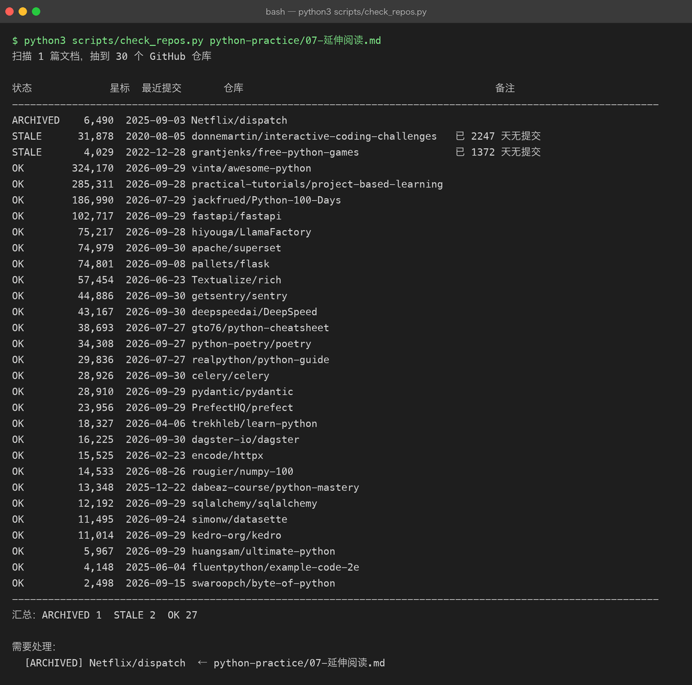

07 · 延伸阅读：从「会写 Python」到「读得懂生产代码」
这一篇不是教程，是一张书单加一套读法。 读完它不会让你多会一个语法，但能帮你省下几个月——因为绝大多数人卡住的地方， 不是「不知道学什么」，而是「一直在学入门，从不读成品」。
文中的星标数与最近提交日期，全部由
scripts/check_repos.py在写作当天现场抓取（见 7.6 的真实运行截图），没有一个是凭印象填的。
7.1 先纠正一个误区
你在搜索引擎里搜「Python 学习项目」，会得到几百个清单。它们大多在回答同一个问题： 「我该怎么入门 Python」。
但这个问题对你已经不成立了。你是 Java 后端，for / if / class / 异常 / 集合这些概念早就有了， Python 只是换了一套拼写方式。语言本身的语法密度并不高，两三周就能写顺。
真正拉开差距的是另外两件事：
| 差距来源 | 具体表现 | 怎么补 |
|---|---|---|
| 惯用法（idiomatic） | 你在写「用 Python 语法的 Java」——满屏 for i in range(len(x))、到处 getXxx()、拿 class 当唯一抽象手段 | 读 7.2，重点学推导式 / 生成器 / 协议 / 上下文管理器 |
| 工程化 | 写得出脚本，但不知道一个「包」怎么分层、怎么做可选依赖、怎么设计可测的接口 | 读 7.3，从小的生产库开始读源码 |
所以下面两块：7.2 补系统性（挑 1–2 个就够），7.3 读生产代码（重点）。
7.2 补系统性：只挑 1–2 个
别把这张表当待办清单。从里面挑 1 个做完，胜过 5 个都收藏。
| 仓库 | 星标 | 最近提交 | 一句话 | 适合谁 |
|---|---|---|---|---|
dabeaz-course/python-mastery | 13.3k | 2025-12-22 | David Beazley 的进阶课：生成器、装饰器、描述符、迭代器协议、元编程、协程 | 最推荐。有 Java 背景的人读它收益最大——它回答的正是「Python 为什么没有 Java 那套东西」 |
jackfrued/Python-100-Days | 187.0k | 2026-07-29 | 中文，100 天从语法到 Web / 数据分析 / AI | 想要一份中文路线图时看它。缺点是偏教学，代码不是生产级——当目录用，别当范本抄 |
huangsam/ultimate-python | 6.0k | 2026-09-29 | 单文件，从语法到工程实践逐条覆盖 | 拿它当自查清单：逐条问自己「这条我会不会」。有不会的就地补 |
rougier/numpy-100 | 14.5k | 2026-08-26 | 100 道 numpy 练习（带答案） | 你只要碰数据就必须刷。向量化思维是 Python 数据方向的分水岭 |
fluentpython/example-code-2e | 4.1k | 2025-06-04 | 《Fluent Python》第 2 版配套代码 | 工具书性质。按需查，不要通读 |
trekhleb/learn-python | 18.3k | 2026-04-06 | 按主题切分的可运行代码示例集 | 遇到不确定的语法点时当速查 |
swaroopch/byte-of-python | 2.5k | 2026-09-15 | 面向完全零编程基础的书 | 你是 Java 背景，可以跳过 |
gto76/python-cheatsheet | 38.7k | 2026-07-27 | 一页纸速查表 | 贴在手边，别当教材读 |
vinta/awesome-python | 324.2k | 2026-09-29 | 「我想做 X，该用哪个库」的答案 | 索引不是教材。解决问题时来查 |
practical-tutorials/project-based-learning | 285.3k | 2026-09-28 | 按项目组织的教程索引 | 同上，索引性质。本仓库 python-practice/ 的前四个项目就是这类东西的「已跑通版」 |
两个已经停滞的（脚本实测判定为 STALE，见 7.5）：
| 仓库 | 星标 | 最近提交 | 情况 |
|---|---|---|---|
donnemartin/interactive-coding-challenges | 31.9k | 2020-08-05 | 已 2247 天无提交（六年多），题目仍可用但无人维护 |
grantjenks/free-python-games | 4.0k | 2022-12-28 | 已 1372 天无提交（近四年）。学语法可以，别指望更新 |
另有一个仍在维护、但内容偏旧的：realpython/python-guide（29.8k，2026-07-27 仍有提交）——质量高，但部分章节停留在 Python 3.6 时代，按需查即可，别当主线。
7.3 读生产代码：四阶梯
顺序不能乱。 直接打开 Django 或 Superset，你看到的只会是一屏 import 和元类，然后关掉—— 这跟「用一本字典学英语」是同一个错误。
阶梯 1–3：先读这些
| 仓库 | 星标 | 最近提交 | 读它学什么 | 你的 Java 对照 |
|---|---|---|---|---|
encode/httpx | 15.5k | 2026-02-23 | 一个完整库的分层：传输层 / 编解码 / 异常体系 / 超时 / 重试插件。规模小、边界清晰，是「能读完」的第一个目标 | OkHttp / HttpClient |
pydantic/pydantic | 28.9k | 2026-09-29 | 「类型即校验」怎么实现：元类如何从注解推出 schema、校验失败如何定位到字段。还混了 Rust 扩展，能看到真实场景的 Python + Rust 协作 | Bean Validation / Lombok |
pallets/flask | 74.8k | 2026-09-08 | 框架骨架：核心只有几千行。路由表怎么建、request 上下文与 g 怎么做到「不用传参也能拿到」 | Servlet Filter 链 / ThreadLocal |
fastapi/fastapi | 102.7k | 2026-09-29 | 依赖注入与自动文档：从函数签名反推出请求模型和 OpenAPI schema。你在 python-practice/04 用过它，回头看实现最省力 | Spring @Autowired + Swagger |
注意仓库地址：
tiangolo/fastapi现在会 302 跳到fastapi/fastapi（换过 org）。 旧链接还能打开，但引用时应写新地址。这类「悄悄搬家」是本页 7.5 常客。
阶梯 4：读「系统」而不是「库」
| 仓库 | 星标 | 最近提交 | 读它学什么 |
|---|---|---|---|
getsentry/sentry | 44.9k | 2026-09-30 | Django 写的真实产品：多租户隔离、限流、事件处理流水线。看一个「真的有人在用」的系统怎么分层 |
apache/superset | 75.0k | 2026-09-30 | 大型 Flask 应用怎么分模块；前后端如何协作；插件化图表体系 |
PrefectHQ/prefect | 24.0k | 2026-09-29 | 编排引擎：状态机、任务依赖、重试与超时语义。对照你熟悉的 Quartz / Spring Batch 读 |
celery/celery | 28.9k | 2026-09-30 | 分布式任务队列：broker / worker / result backend 三段式设计 |
python-poetry/poetry | 34.3k | 2026-09-27 | 依赖解析算法与锁文件。对照 Maven 的依赖收敛问题 |
simonw/datasette | 11.5k | 2026-09-24 | 一个人的项目能有多干净。可读性最佳样本，适合学「怎么把代码写成别人愿意读的样子」 |
kedro-org/kedro | 11.0k | 2026-09-29 | 一个包如何用强 CI、Click 插件机制、可选依赖撑起可扩展性 |
Textualize/rich | 57.5k | 2026-06-23 | 终端渲染，以及 __rich__ 这种「协议式接口」——Python 版的 toString() 但更灵活 |
sqlalchemy/sqlalchemy | 12.2k | 2026-09-29 | ORM 内核：表达式树怎么编译成 SQL。对照 JPA / Hibernate |
dagster-io/dagster | 16.2k | 2026-09-30 | 数据资产编排的另一种设计取向（对比 Prefect 看差异） |
7.4 怎么读（这节最重要）
前面都是「读什么」，这一节是「怎么读」。方法不对，读了等于没读。
- 用你已经在用的库当教材。 不要挑陌生的。你的
python-practice/里pytest、requests、FastAPI、pandas都在跑—— 就读它们，你有真实的疑问可以驱动阅读。带着问题读源码，效率是漫无目的读的十倍。
- 顺序固定：README 的 "Why" →
tests/→ 实现。- README 先看「为什么会有这个东西、它跟替代方案的区别」；
- 然后读 测试文件——测试是最好的使用文档，它把「怎么用」和「边界在哪」都写清楚了；
- 最后才挑一个你踩过坑的功能，顺着实现读下去。
- 一次只跟一条链路。 比如「一个请求在
httpx里从get()到字节流经历了什么」。 不要试图同时搞懂整个库，那必然会失败。
- 别追求读完。 读完 Flask 核心算毕业；读完 Django 不现实，也不需要。 读源码的目标是建立判断力——知道设计问题大概会落在哪一层，而不是背下实现。
- 读到能改它，才算读懂。 和
00-how-to-practice.md里说的是一回事： 最小的验证动作是给这个库提一个 issue、修一个 typo、加一个测试。 你有 Java 工程经验，这一步比语法学习更能证明你的工程能力。
7.5 避坑清单（都是脚本当场抓出来的）
网上流传的清单普遍有三类腐烂，下面每一条都是 check_repos.py 实测结果，不是转述：
① 已归档——仓库还开着，但已变成只读，不再接受任何提交。
| 仓库 | 星标 | 状态 |
|---|---|---|
Netflix/dispatch | 6.5k | 2025-09-03 已归档（read-only）。它是事件管理平台，多篇中文清单仍在推荐 |
② 已停滞（脚本判为 STALE：超过 540 天无提交）——还在，但没人维护了。学语法可以，别指望它跟上新版本：
| 仓库 | 星标 | 最近提交 | 已停止更新 |
|---|---|---|---|
donnemartin/interactive-coding-challenges | 31.9k | 2020-08-05 | 六年多（2247 天） |
grantjenks/free-python-games | 4.0k | 2022-12-28 | 近四年（1372 天） |
③ 已搬家——旧地址 302 跳转，引用旧地址会让人以为你过时了：
| 旧地址 | 实际地址 |
|---|---|
tiangolo/fastapi | fastapi/fastapi |
hiyouga/LLaMA-Factory | hiyouga/LlamaFactory |
microsoft/DeepSpeed | deepspeedai/DeepSpeed |
④ 星标 ≠ 学习价值。 vinta/awesome-python（324k）和 practical-tutorials/project-based-learning（285k） 是本页星标最高的两个，但它们是索引。索引用来查，不用来学—— 真正适合当教材的 dabeaz-course/python-mastery 只有 13.3k 星。
7.6 这份清单怎么维护
推荐清单是最容易腐烂的东西：库会归档、会搬家、会进维护模式，而你写下的那行链接永远不会自己变。
所以本仓库加了一个脚本 scripts/check_repos.py， 把这件事变成一次可复现的运行。它从文档里抽出所有 GitHub 链接，逐个探测：
| 探测项 | 手段 | 为什么要看 |
|---|---|---|
| 是否可访问 | 仓库首页 HTTP 状态 | 排除 404 |
| 星标数 | 首页 repo-stars-counter-star | 给出「有多少人在用」的量级 |
| 是否归档 | 首页内嵌 JSON 的 "isArchived":true | 归档 = 官方宣布不再维护 |
| 是否搬家 | 首页是否 302 到别的地址 | 避免引用过时地址 |
| 最近提交 | commits.atom（Atom feed，公开不限流） | 判断是否名存实亡 |
| 是否声明维护模式 | 首页内嵌 README 里的 "maintenance mode" | 有些库不归档但明确不接新功能了 |
| 取不到 vs 真的没有 | 网络失败（NET）与 404（DEAD）分开报 | 连扫几十个仓库会被限流，不能把「被拒连」写成「仓库已死」——那是最容易发生的假消息 |
它不需要 GitHub API token——匿名 API 每小时只有 60 次，扫不完一个仓库。 所以它改抓公开页面与 Atom feed，你可以随时自己跑：
python3 scripts/check_repos.py # 扫全仓库
python3 scripts/check_repos.py llm-fundamentals # 只扫某个目录
python3 scripts/check_repos.py --json repos.json # 导出机器可读结果
python3 scripts/check_repos.py --strict # 有死链/归档/搬家则退出码 1
python3 scripts/check_repos.py --delay 1.5 # 被 GitHub 限流时放慢（症状是整站 502）真实运行结果：

7.7 自查问题
读完这一篇，你应该能回答：
- 为什么「Python 学习项目清单」对 Java 背景的人价值有限？你该补的是哪两种能力？
- 读源码为什么建议从
httpx这种小库开始，而不是从 Django 开始？ - 判断一个开源库「还能不能读」，除了看星标还应该看哪几个信号？
- 你的
python-practice/里已经装了哪些库？挑一个，找出它的tests/目录，用 5 分钟回答「它的核心接口有几个」。
下一站：Python 之后要往大模型走，教程 / 微调 / Agent 开发方向的资源清单见
llm-fundamentals/12-tutorials-and-agent.md。